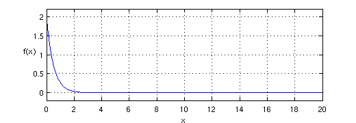
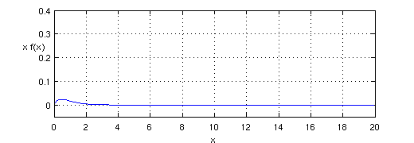
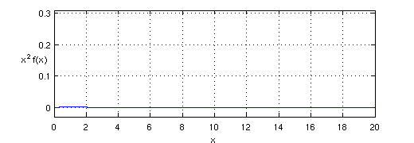
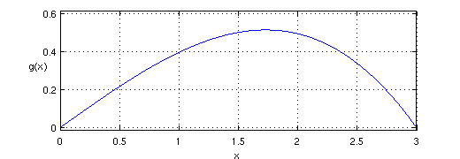
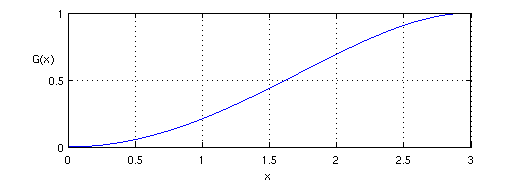

Simple computations with probability distributions
Mark Richardson, 21 May 2011
Contents
(Chebfun example stats/Expectations.m)
format long
In this example, we use Chebfun to solve some probability distribution problems from [1].
1. Expectation of a random variable
We use Problem 3.4 from p. 86 of [1] to motivate this example.
Suppose a continuous random variable X has a probability density function given by
f(x) = 2e^(-2x), x >=0
f(x) = 0, x < 0.
What are: (a) E(X) and (b) E(X^2)?
(a) In order to compute the expectation E(X), we first need define a chebfun over the semi-infinite interval [0 inf]. Since the density function is defined to be zero for x<0, we don't need to concern ourselves with it there.
x = chebfun('x',[0 inf]);
Next we approximate the density function.
f = 2*exp(-2*x); figure('Position',[100 200 520 180]) LW = 'linewidth'; lw = 1.6; plot(f,LW,lw), grid on ylim([-0.2 2.2]) xlabel('x'), ylabel('f(x)','rotation',0)
If f is a density function, then its integral should be 1, and we find that this is indeed the case to within rounding errors.
sum(f)
ans = 0.999999999999996
The expectation of a continuous random variable is defined as the integral over x = -inf...inf of the function xf(x).
xf = x.*f; plot(xf,LW,lw), grid on ylim([-0.05 0.4]) xlabel('x'), ylabel(sprintf('x f(x)\n'),'rotation',0)
We can use the chebfun command SUM to compute this integral (hopefully we can get rid of the restrict command at some point!). The correct answer in this case is 1/2.
sum(xf{0,20})
ans = 0.500000000000006
b) For E(X^2), the answer is again 1/2 and we compute this in exactly the same way as before.
xxf = x.^2.*f; plot(xxf,LW,lw), grid on ylim([-0.03 0.31]) xlabel('x'), ylabel('x^2 f(x)','rotation',0)
sum(xxf{0,20})
ans = 0.500000000000123
2. Mean, median and mode of a probability distribution
This example is motivated by problem 3.33 on p. 94 of [1].
The probability density function of a continuous random variable X is g(x) = 4x(9-x^2)/81, for 0<=x<=3, and zero otherwise. Find: a) the mean, b) the median, and c) the mode.
First, we define an appropriate Chebfun variable and the p.d.f.
x = chebfun('x',[0 3]); g = 4*x.*(9-x.^2)/81; plot(g,LW,lw), grid on ylim([-0.01 0.61]) xlabel('x'), ylabel('g(x)','rotation',0)
a) Computing the mean is simply a matter of computing the expectation as in the previous question. The exact answer is 1.6 and this is what we find using Chebfun.
mean = sum(x.*g)
mean = 1.600000000000000
b) The median is the value a for which P(X<=a) = 1/2. In order to solve this problem we need to work with the cumulative distribution function, which is simply the indefinite integral of the probability density. This can be computed with the chebfun command CUMSUM.
G = cumsum(g); plot(G,LW,lw), grid on xlabel('x'), ylabel(sprintf('G(x)\n'),'rotation',0)
Note again that as we would expect for any p.d.f., the integral is 1. In order to compute the the value of a, we may use one of the relational operators that have been overloaded in Chebfun. Here it is:
median = roots(G-0.5) median_exact = sqrt(9-9*sqrt(2)/2)
median = 1.623588300438591 median_exact = 1.623588300438591
c) For the mode, we are simply looking for the position of the global maximum of the probability distribution. This is easily computed with the Chebfun command MAX.
[gmax,mode] = max(g); display(mode)
mode = 1.732050807568877
Again, this matches the exact answer
mode_exact = sqrt(3)
mode_exact = 1.732050807568877
Here is a graph showing the three computed values:
plot(g,LW,lw), grid on, hold on plot([mean mean],[0 g(mean)],'-r',LW,lw) plot([median median],[0 g(median)],'-m',LW,lw) plot([mode mode],[0 g(mode)],'-k',LW,lw) text(0.2,0.55,sprintf('mean = %1.2f',mean),'color','r') text(1.2,0.55,sprintf('median = %1.2f',median),'color','m') text(2.2,0.55,sprintf('mode = %1.2f',mode),'color','k') hold off, ylim([-0.01 0.61]) xlabel('x'), ylabel('g(x)','rotation',0)

References:
[1] M. Spiegel, J. Schiller and R. Srinivasan, Schaum's Outlines -- Probability and Statistics, 3rd. ed., 2009.